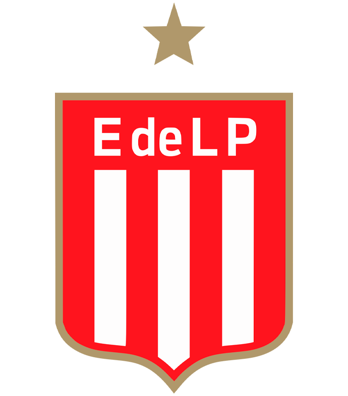
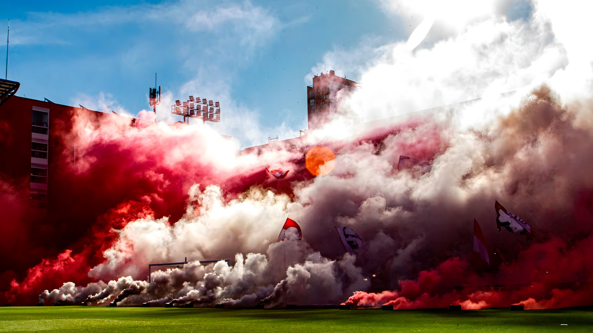
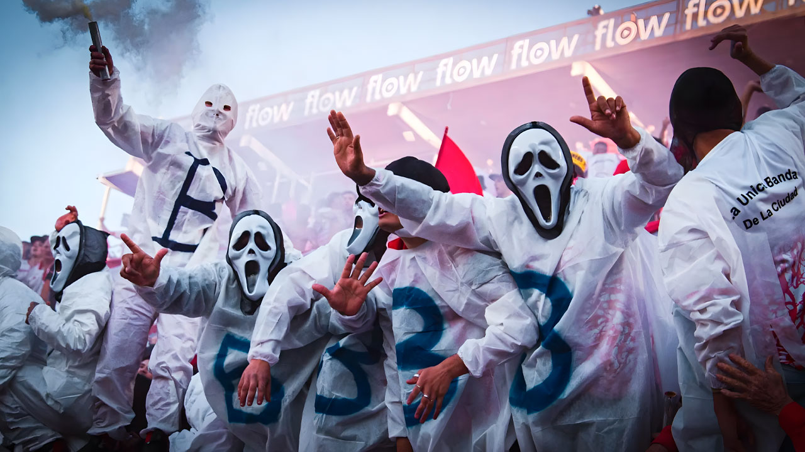
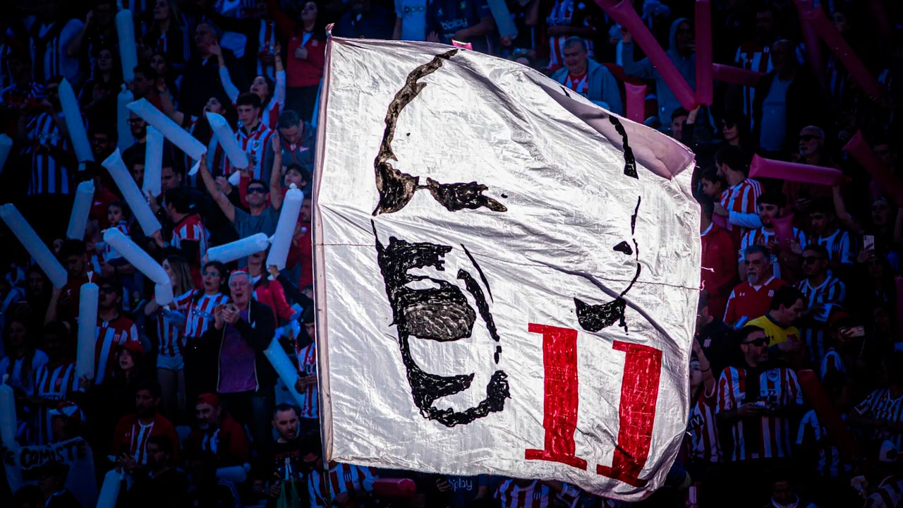

Pagina web de las letras y canciones de Estudiantes de la Plata, Para cantar en UNO.

Canciones Estudiantes De La Plata

Señores vamos a volver a UNO
Señores vamo a volver a UNO, El sueño se hace realidad, La cancha que me llevo mi viejo, La historia de estudiantes esta aca...

Aca en Estudiantes hay que laburar
A los jugadores les quiero decir aca tienen que dejar la vida, Aca en Estudiantes hay que laburar como nos enseño Zubeldia, Vayamos al frente salgamo...

Todos los momentos que viví
Todos los momentos que viví, todas las canchas donde te segui, Cuantos campeonatos festejamos, Cuantas copas levantamos desde que te conoci...
Pincharrata sos mi Enfermedad
Pincharrata sos mi enfermedad, Cada dia yo te quiero mas, Ni la muerte nos va a separar, Desde el cielo te voy a alentar...
No soy de boca porque naci en Argentina
No soy de boca porque naci en Argentina, No soy de river porque nunca fui gallina, No soy de racing porque tengo sentimientos...
Hay una banda que fue Campeon Mundial
Hay una banda que fue campeon mundial y no le cabe ninguna, Hay una banda que sabe lo que es sentir toda la locura...
Con el Leon yo voy a todos lados
Con el Leon yo voy a todos lados, Siempre descontrolado, Yo te quiero ver campeon, Jamas jamas podran tener la hinchada...
Esta es tu hinchada que siempre alienta
Yo te quiero tricampeon, yo a vos te sigo vos sos mi vida, Siempre te voy a alentar, Sos lo mas grande de la Argentina...
Ser del Pincha es un sentimiento
Ser del pincha es un sentimiento, no se explica se lleva bien adentro, Y por eso lo sigo a donde sea, Soy del pincha hasta...
Sin el Leon moriria
Es la banda loca Pincharrata, La que nunca te deja a pata, La que en las buenas y en la malas siempre te va a acompañar, Es un sentimiento de la cuna...
Canciones para el Lobo
A vos que sos hincha del Lobo
A vos que sos hincha del lobo, Y nunca saliste campeon, Te voy a contar lo que siente toda la gente del Leon, Nosotros ganamos la copa...
Es mi ilusion volver a verte
Quiso el destino el azar, Que el pincha tenga un hijo bobo, Como muy puto salió, Al basurero se lo cogen todos, Es mi ilusion volver a verte...
Para vos Tripero
Esta banda ya no puede parar, Esta banda ya no puede parar, tripero puto te vamo a matar, Todo el bosque te vamo a quemar...
Yo tengo un hijo que es un cobarde
Yo tengo un hijo, Que es un cobarde, Se llama lobo, Corre en todas partes, Mas de 100 años que no son campeones, Lo dijo el viejo son todos cagones...
Quiero jugar contra el Lobo
Quiero jugar contra el lobo, Y matar a los triperos, Quiero cagarlos a tiros, Como en aquel 3-0, Lobo vos sos un cagon...
Yo no soy un tripero que se queda en la casa
Yo no soy un tripero, Que se queda en la casa, Escuchando la radio para ver lo que pasa, Yo soy hincha del Pincha, No me cabe ninguna...
En los tablones el Pincha fue campeon
En nuestra cancha vivimos emociones, En los tablones el Pincha fue campeon, Y vos tripero en cancha de cemento la vuelta no la diste...
La que dice Lobo te comiste 7 te queres matar
Aca esta tu hinchada, Que te sigue siempre, Siempre a todos lados, Siempre a donde vas, La que deja todo, Por venir a verte...
A UNO ya vamos a volver
Van pasando los años, Se van los dirigentes, Pero lo que no pasa es tu gloriosa gente, Que te sigue en las buenas y en las malas...
Veni Tripero cagon
Veni tripero cagon, Y que se plante la 22, Veni y no chamuyes, Que con el pincha siempre corres, Vamo Estudiantes, Pongan huevos...
El Lobo ya volvio para que se lo coja el Leon
Pincha, Yo a vos te quiero, Y te pido que pongas mas huevos, Te queremos ver salir campeon, Y por eso la banda te alienta desde el tablon...
Lobizon te definde la gorra
Ahora lobizon que volviste del descenso, Ahora andas comprando trapos porque no te dan los huevos, Cuando andas por los barrios, Te cruzas...